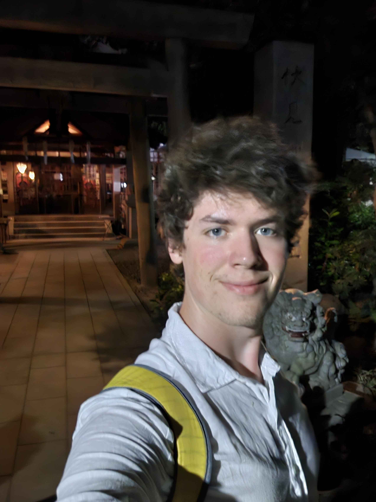

Who I am
Hi, I'm Keaton.
I’m a Computer Science and Artificial Intelligence student interested in building databases, working with DevOps, and figuring out how things work behind the scenes. Throughout my work experience, I’ve learned that solving problems often means figuring out why something broke before anyone can explain what it was supposed to do in the first place.
These experiences have made me curious about what I can build, from systems that organize information to infrastructure that keeps everything running. I’m constantly learning, partly because technology never stops changing and partly because I keep finding new things I want to try.

What I care about
I’ve always found something interesting about the difference between knowing how something works and being able to explain why it works. It’s easy to follow a tutorial, copy some code, and convince yourself you understand the whole system. Then something breaks, and suddenly the tutorial feels a lot less helpful.
To me, critical thinking means being willing to question what I know, consider ideas I disagree with, and admit when I might be wrong. Building databases and working with DevOps makes this especially important. A solution might work perfectly on my machine, but the real world has a funny way of finding every assumption I forgot to question.
That’s part of what keeps me interested. I want to understand how things work, experiment with different approaches, and see what happens when I put an idea into practice. I don’t expect to know everything before I start building. If anything, the things I don’t know are usually the most interesting part.
Ultimately, I’m curious to see what I can build. Whether it’s a database that makes information easier to use or infrastructure that keeps an application running without requiring constant intervention, I want to keep learning, keep experimenting, and see how far I can take an idea. Ideally, I’ll build something useful along the way. And if I break a few things in the process, at least I’ll know what not to do next time.
An educated mind is able to entertain a thought without accepting it.
Aristotle
Background
Outside the terminal
Interested in working together, or want to talk about any of the projects? I'd be glad to hear from you.
Get in touch